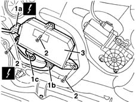

5505A47 (Digital network node) CONTROL UNIT in passenger door - R.R. with panel removed
- Path
- Procedures > 55 ELECTRICAL EQUIPMENT > 5505 ELECTRICAL CIRCUIT FOR INSTRUMENTS/INDICATORS > 5505A multi-function components > 5505A47 (Digital network node) CONTROL UNIT in passenger door - R.R. with panel removed
- Kind
- repair procedure (removal / refitting; the operation number is the code)
- Applies to
- all engines; all production periods
- Interactive page
- https://sloeber94.github.io/elrnDB-lYpsln/en/#/2429370
Applies to: all engines; all production periods
 Removing
Removing
 Refitting
Refitting1. Disconnect electronic control unit electrical connections (1a), (1b), (1c).
 | Name | Connector |
|---|---|---|
1a | Passenger door control unit |
| Name | Connector |
|---|---|---|
1b | Passenger door control unit |
| Name | Connector |
|---|---|---|
1b | Passenger door control unit |
| Name | Connector |
|---|---|---|
1c | Passenger door control unit |
| Name | Connector |
|---|---|---|
1c | Passenger door control unit |
| Name | Connector |
|---|---|---|
1c | Passenger door control unit |
2. Undo the bolts.
3. Recover the control unit

Applies to: all engines; all production periods
Refitting
RemovingPosition the control unit and fix it using the bolts.
Connect the electrical connections .